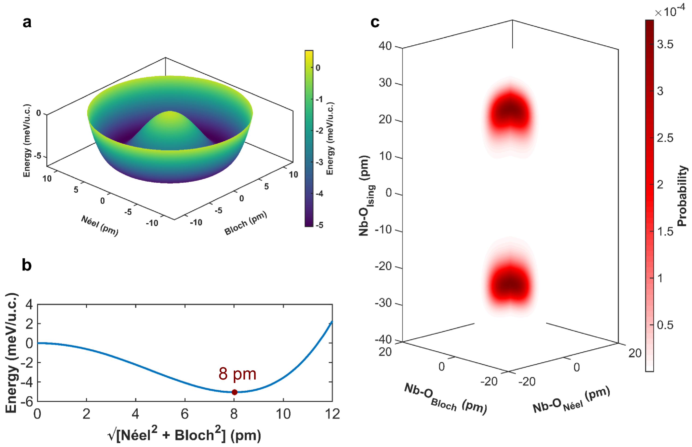
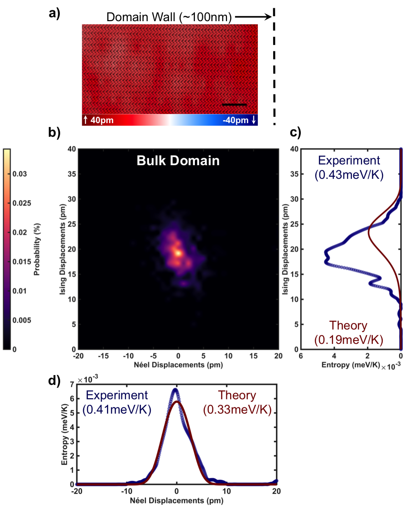
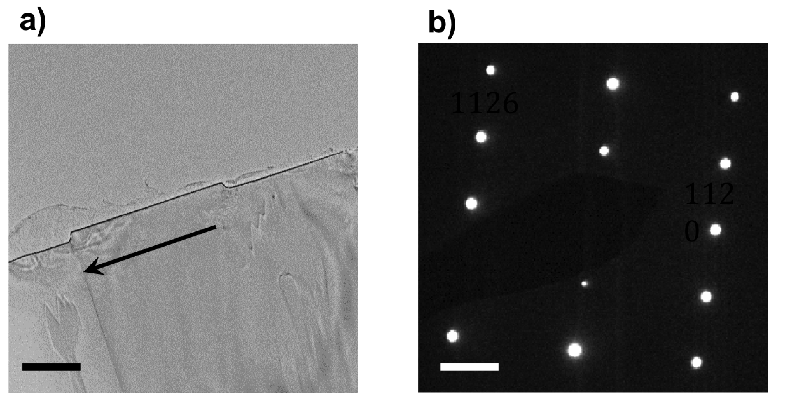
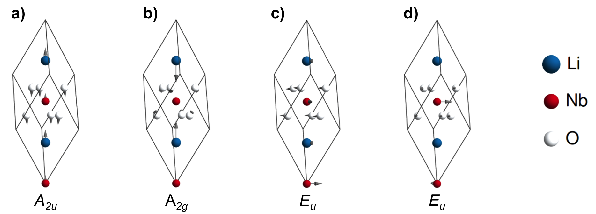
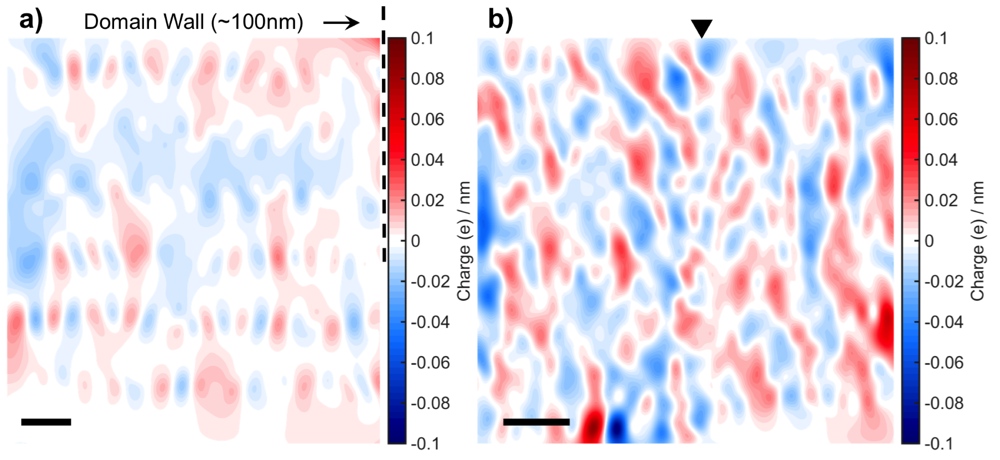
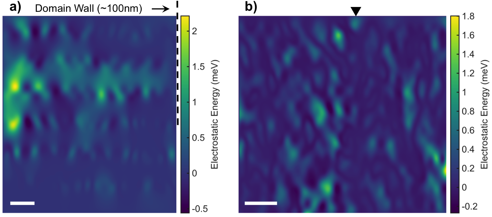
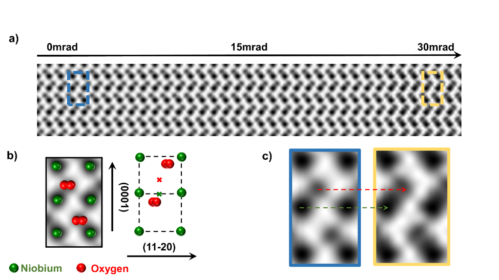

AtomicScaleMeasurementofPolarEntropy
DebangshuMukherjee,
SergeiProkhorenko,
2,3
LeixinMiao,
Ke
Wang,
EricBousquet,
VenkatramanGopalan,
1,4
andNasimAlem
1,4,
∗
DepartmentofMaterialsScienceandEngineering,ThePennsylvaniaStateUniversity,UniversityPark,Pennsylvania16802,USA
TheoreticalMaterialsPhysicsQ-MATCESAM,UniversityofLiège,SartTilmanB-4000,Belgium
PhysicsDepartmentandInstituteforNanoscienceandEngineering,
UniversityofArkansas,Fayetteville,Arkansas72701,USA
MaterialsCharacterizationLaboratory,MaterialsResearchInstitute,
ThePennsylvaniaStateUniversity,UniversityPark,Pennsylvania16802,USA
(Dated:July18,2018)
Entropyisafundamentalthermodynamicquantitythatisameasureoftheaccessiblemicrostatesavailable
toamacroscopicsystem.Quantitativemeasurementsofentropychangeusingcalorimetryarepredominantly
macroscopic,withdirectatomicscalemeasurementsbeingexceedinglyrare.Hereforthe?rsttime,weex-
perimentallyquantifypolarcon?gurationalentropy(inmeV/K)usingsub-ångströmresolutionaberration
correctedscanningtransmissionelectronmicroscopy.Thisisperformedinasinglecrystaloftheprototypical
ferroelectricLiNbO
throughthequanti?cationoftheniobiumandoxygenatomcolumndeviationsfromtheir
paraelectricpositionswithaprecisionof
≈2
pm.Combinedwith?rstprinciplestheoryplusmean?elde?ective
Hamiltonianmethods,wedemonstratethattheintrinsicentropiccontributiondominatestheexperimentally
measuredentropy.Signi?cantexcursionsofthepolarizationawayfromitssymmetryconstraineddirectionis
seeninsingledomainregionswhichincreasesintheproximityofdomainwalls.Excellentagreementbetween
ourexperimentallymeasuredandtheoreticallypredictedentropyvaluesisobserved.Thisstudypresentsa
powerfultooltoquantifyabsoluteentropyontheatomicscaleanddemonstratesitsdominantroleinlocal
symmetrybreakingat?nitetemperaturesinclassic,nominallyIsingferroelectrics.
SubjectAreas:CondensedMatterPhysics,MaterialsScience,StatisticalPhysics
I.INTRODUCTION
Whileabsoluteentropy,afundamentalthermodynamicpa-
rameter,isdi?culttoexperimentallymeasuremacroscopi-
cally,achangeinentropy
(ΔS=
ΔQ
rev
/
T
)
,isusuallymeasured
usingcalorimetry,where
ΔQ
rev
isthereversibleheatsupplied
tothesystemataconstanttemperatureT[1,2].Atabsolute
zero
(T=0K)
,thetotalentropyofaperfectcrystalfreeof
dopantsiszero[3].Uponadditionofreversibleheattothe
system,theentropyincreases.Directlymeasuringtheabso-
luteentropyofthesystemthroughcharacterizingthemicro-
scopiccon?gurations,orthemicrostates,ischallenging.For
example,evenforamoleofmatterconsistingofAvogadro’s
numberofmolecules
(
N≈6×10
)
,thetotalpossiblenum-
berofequiprobablemicrostatesatequillibrium,
(
W≈e
N
)
is
largerthanthenumberofatomsintheobservableuniverse[4].
Suchenormouslylargenumbersofmicrostatesarealsoin-
volvedincondensedmattersystemswhereadopantatommay
chooseanyoneofequivalentatomicsitesinaperiodiclattice.
Modernmicroscopytechniquessuchasscanningtransmis-
sionelectronmicroscopy(STEM)andscanningtunnelingmi-
croscopy(STM)areabletodirectlyimagemicrostatesonan
unprecedentedlengthscalewithprecisionapproachingasin-
glepicometer[5–7].However,convertingtheseimagesinto
quantitativemeasuresofentropy(inmeV/K)isexceedingly
rare,forexample,asinarecentexampleof?ndingcon?gura-
tionalentropyinasinglemoleculeofdibutylsul?de(with27
atomsintheformulaeunit)usingSTM[8].Incondensedmat-
ter,weknowofnootherexampleswhereatomicresolution
∗
alem@matse.psu.edu
microscopy,andinparticularSTEMhasbeenusedtoquantify
entropy.
Inthisstudy,weprobeasinglecrystalofferroelectric
LiNbO
,awell-knownopticalferroelectric,tomeasurethe
polarentropyusingaberration-corrected(AC)STEM[9].Fer-
roelectricmaterialshaveaspontaneousandswitchableelec-
tricalpolarization,whichisaconsequenceofthelattice
distortionsinthecrystalstructurethatbreakinversion
symmetry[10–12].Regionsofuniformpolarizationarecalled
domains,withtheboundarybetweentwoadjacentdomains
calledadomainwall[13–16].Sincetheferroelectricpolariza-
tionisaconsequenceofcrystaldistortions,thepossiblepolar
vectorscanoccuronlyalongcertainsymmetryallowedcrys-
tallographicdirections.Asauniaxialdisplaciveferroelectric
(spacegroupR3c),theoriginofthespontaneouspolarization
inLiNbO
isaconsequenceoftheniobiumandlithiumcation
displacementswithrespecttotheoxygenoctahedralcenter
alongeitherthe
(0001)
orthe
(
̄
)
crystallographicaxes,
andthusthepolarizationvectorsarerestrictedtoonly
⟨
⟩
direction(alsolabeledasz-or3-direction)[9,17–20].Clas-
sicaluniaxialferroelectricssuchasLiNbO
havebeenlong
thoughtofasIsinglike,sincelatticedistortionsawayfrom
thesymmetryrestrictedpolarizationdirectionshasahigh
energycostassociatedwiththem[10,14].However,recentre-
searchhavepointedoutthat?uctuationsawayfromtheIsing
polarizationdirectiondoexistinferroelectrics,withBloch
andNéelcomponentsarisingatdomainwalls,whichwere
predictedandalsoexperimentallydetected[21–24].
Inthiswork,however,weshowusing?rstprinciplesthe-
oryplusmean?elde?ectiveHamiltonianmethodsthatnon-
Isingpolar?uctuationsareintrinsictoferroelectricLiNbO
at
?nitetemperatures,andthattheyexisteveninahomoge-
neouslatticewithnodomainwalls.Usingultrahighresolu-
tionAC-STEM,weexperimentallyquantifythis?uctuation
generatedentropyontheatomicscaleforthe?rsttimebyde-
terminingtheNbandOpositionswithaprecisionapproach-
ing
≈2pm
.Theprecisecompositionofthechosencrystalis
Li
0.95
Nb
1.01
O
(alsoreferredtoasthecongruentcomposition
orCLNwherecrystalgrowthiseasytoperform)[25–29].This
o?-stoichiometryleadstothepresenceofLivacanciesand
Nb
Li
antisitesthatwillcontributetoextrinsicpolarentropy.
Weestimatethestructuralenergyandintrinsicentropyofsto-
ichiometricLiNbO
throughtheory,andbycomparisonwith
theexperimentalmeasurementofthepolarentropy,demon-
stratethateveninsideabulkdomaininthecongruentcom-
positionintrinsicentropyisdominant(>80%ofthetotalmea-
suredentropy).Weobservethattheextrinsicentropycontri-
butionincreasingby
≈25%
aswegetclosertothedomain
walls,butstillnotthepredominantcontribution.Theentropy
manifestsitselfassymmetry?uctuationsofthepolarization
perpendiculartothe
⟨
⟩
polaraxis,leadingtolocalnon-
Isingbehavior.Itisshownthatentropicdecreaseinoverall
energydominatesanyincreaseinelectrostaticenergydue
tothesenon-Ising?uctuations.Thestudythuspresentsan
absolutemeasurementofpolarentropy,itsspatialmapping
withatomicscaleresolution,andinsightsintermsoflocal
symmetrybreaking.
II.EXPERIMENTALSETUP
Weusedultrahighresolutionscanningtransmissionelec-
tronmicroscopytoimagetheoxygenandniobiumatom
columnstodeterminethepolarizationmetrologythrough
quanti?cationofboththeniobiumandoxygenatomposi-
tions.Tovisualizetheatompositions,atthe
◦
domain
wallandalsoatthebulkdomain,weimagedtheelectron
transparentLiNbO
samplefromthe
[
̄
]
crystallographic
zoneaxiswhichenablesthedisplacementstolieinplane,
withthesamplepreparationdetailsexpandedindetailinsec-
tionIVA.Whilebothbright?eld(BF)andannulardark?eld
(ADF)STEMimageswereacquired(Figure1aandFigure1b),
weexclusivelyuseBF-STEMimagesforthequanti?cation
ofpolardisplacementssinceboththeniobiumandoxygen
atompositionsandtheirrelativedisplacementscanbequan-
ti?ed.Thistechniquehasbeenpreviouslydemonstratedasa
viablepathwayforthedeterminationofthecationandoxygen
atompositionssimultaneously[30,31],andislesssusceptible
tospecimentiltanddefocusincomparisontoannularbright
?eld(ABF)-STEM[32,33].Thetotalpolardisplacementsare
calculatedonaunitcellbasis,withrespecttoameanunit
cellcalculatedfromtheentireimage(Figure1c).Asdemon-
stratedinFigure1d,displacementsalong
⟨
⟩
aretheIsing
displacements,whilethosealong
⟨
̄
⟩
aretheNéeldis-
placements.Fromasymmetryperspective,sinceLiNbO
is
auniaxialferroelectric,theonlypolarniobium-oxygendis-
placementsinbulkdomainmaybeexpectedtobeIsing.
Afterimagingtheatomcolumns,weusedcustom-
developedMATLABscriptstore?nethepositionsforsub-
pixelprecisiondisplacementmetrology.Toperformthere-
?nement,westartedbylocatingthehighestintensityspots
asa?rstpasstoestimateatompositionsinADF-STEMandin-
vertedcontrastBF-STEMimages.Weperformedsubsequent
re?nementby?ttingamulti-peaktwo-dimensionalGaussian
totheobservedatomintensitydistributiontogettheatom
positionswithaprecisionapproaching
≈2
pm[34].Todeter-
minethepolardisplacements,we?rstassignedthere?ned
atompositionstotheircorrespondingLiNbO
unitcellval-
ues,andthengeneratedanaverageunitcellbysummingall
theindividualunitcellsthroughouttheBF-STEMimage(Fig-
ure1d).Thedimensionsofthiscalculatedaverageunitcell
(Figure1d)closelymatcheswiththereportedstructureof
LiNbO
[35,36],indicatingthehighdegreeofprecisionofthe
obtainedBF-STEMimages.Theoxygenandniobiumcenters
ofmassforeachindividualunitcell(Figure1e)weresubse-
quentlycomparedtothecenterofthecalculatedaverageunit
celltodeterminethepolardisplacementsforbothniobium
andoxygenatoms.TherelativeNb-Opolardisplacementvec-
torswerethenmeasuredbysubtractingtheoxygendisplace-
mentvectorfromtheniobiumdisplacementvectorineach
unitcell.Thus,theaverageunitcellthatweusedforthein-
dividualniobiumandoxygendisplacementsactsasthebasis,
andsinceacommonbasisisusedforboththeatompositions,
the?nalrelativedisplacementisindependentofthechoice
ofthereference.Usingthisprocedure,wethussuccessfully
calculatedapolarvectorforeachunitcellinaBF-STEMim-
age(Figure1e),whichwassubsequentlydecomposedintoits
correspondingIsingandNéelcomponentsalongthe
⟨
⟩
and
⟨
̄
⟩
directionsrespectively.
III.RESULTSANDDISCUSSIONS
Tovisualizethespatialevolutionoftheniobium-oxygenpo-
lardisplacements,weappliedourdisplacementmetrologyas
detailedinsectionIItoasectionofthe
◦
domainwall,with
Figure2ademonstratingthecorrespondingBF-STEMimage,
wherethescaledIsingdisplacementsareoverlaid.Thebluere-
gionsrefertoIsingdisplacementsalong
[
̄
]
axis,whilethe
redregionsindicatetheIsingdisplacementsalongthe
[0001]
direction.The
◦
natureofthewallandthedomainrever-
salacrossonlyonetotwounitcellscouldbeimmediately
ascertained,withthenon-idealbehaviorofthewallbeingap-
parentthroughthepresenceoflocalkinksandbends.The
canonicalpolarizationtransitionstozeroatthewall,withthe
wallwidthbeingapproximatelyonetotwounitcells,similar
tothepreviouslyobservedpolarizationbehaviorofniobium
atomsacrossthe
◦
wall[37].PlottingtheindividualIsing
displacements,weobservethatthedisplacementsacrossthe
domainwallareassociatedwithsimultaneousmotionofboth
theniobiumandtheoxygencenters.
Thedomainwallanditsvicinityarealsocharacterizedby
regionsofNéeldisplacements,i.e.polardisplacementsperpen-
diculartothewall,withpartsofthewallfeaturinghigherNéel
intensitiescomparedtotheneighboringdomain(Figure2b).
IncontrasttotheIsingdisplacements,whicharedrivenbythe
cooperativemotionofoxygenandniobiumatomsacrossthe
domainwall,theNéeldisplacementsarehoweverprimarily
FIG.1.
Schematicofelectronmicroscopyexperiments.
(a)Aberration-correctedBrightField(BF)-STEMimageofadomainwallin
LiNbO
,withthewalllocationmarkedbytheblacktriangle,withazoomedsectionininsetshowingoxygenandniobiumpositions.Scale
baris2nm.(b)SimultaneouslycollectedAnnularDarkField(ADF)-STEMimageoftheregionimagedinFigure1a,withthewalllocation
markedbytheblacktriangle.Thezoomedsectionininsetshowstheniobiumatoms.Scalebaris2nm.(c)Averagedmeanunitcellfromthe
experimentaldatasetswiththeniobiumpositionsingreenandtheoxygenatomsinred.Theunitcellisshownastheblackrectangle.(d)
Theschematicoftheunitcellwiththeexperimentallymeasuredlongandshortdimensions.Theniobiumandoxygencentersareshownas
greenandredcrosseswiththeprojectedIsingandNéeldisplacementdirections.(e)AtomicmodelofLiNbO
crystalstructureviewedfrom
the
[
̄
]
zoneaxis,withlithiumatomsinpurple,niobiumatomsingreenandoxygenatomsinred.Theaverageunitcellforpolarization
calculationsisshownasablackdashedboxwiththearrowsreferringtothepolarizationdirection.
drivenbytheniobiumatomsreachingamaximainmagnitude
atthewall.
FromtheIsingandNéeldisplacementswhichwemapin
totheclassicalexpectationofapureIsingwall,non-Isingdis-
placementsdoinfactoccur.Tovisualizetheircombinede?ect,
wecalculatedthecurlofthepolarniobium–oxygendisplace-
mentvector
(
∇×⃗u
Nb−O
)
,whichisplottedinFigure2c.The
magnitudeofthecurlincreasesatthewall,indicatingclock-
wiserotationofthepolarNiobium-Oxygendisplacementvec-
toratthewall.TheNéeldisplacementshoweveratthedo-
mainwallhaveadirectionalpreference,whichmaybedue
tothehigherelectrostaticenergyneededforhead-to-head
ortail-to-tailcon?gurationsarisingfrombidirectionalNéel
displacements.
Figure2dshowsthestatisticalaveragesofthetotalIsing
andNéelpolardisplacementsalongthe
⟨
⟩
direction.We
observethattheclassicalIsingdisplacementpro?lewitha
magnitudereversalofapproximately55pm,matchingclosely
withtheoreticalpredictions[9,19].Conversely,thewallis
alsoassociatedwithapproximately10pmofNéeldisplace-
ments,centeredatthewall.Suchnon-Isingdisplacements
havebeenpredictedbefore,thoughonemaynotexpectthem
inaharduniaxialferroelectric[15,18,38].Previousexperi-
mentalobservationsofthepolarizationvectordeviatingfrom
thebulkpolaraxishavebeenobservedinPbTiO
,LiTaO
and
PbZr
x
Ti
1-x
O
,butnotinLiNbO
[5,23,39].
Tounderstandtheoriginofthepolarinstabilityleadingto
 image.3.1[359*375]
image.3.1[359*375]
Figure2aandFigure2brespectively,itisobviousthatcontrary
FIG.2.
PolardisplacementsmeasuredwithBF-STEM.
(a)LiNbO
domainwallimagedfrom
[
̄
]
zoneaxiswiththepolarIsing
niobium-oxygendisplacementsoverlaid.Scalebaris2nm.TheIsingniobiumandoxygenalongthe
⟨
⟩
directioningreenandred
respectivelywiththesolidlinesreferringtotheaveragesareplottedbelow.(b)Polarniobium-oxygenNéeldisplacementsoverlaidonthe
BF-STEMimage.Scalebaris2nm.TheNéelniobiumandoxygenalongthe
⟨
̄
⟩
directioningreenandredrespectivelywiththesolid
linesreferringtotheaveragesareplottedbelow.(c)Curloftheniobium-oxygendisplacementvectoroverlaidontheBF-STEMimage,with
therotationvectorsoverlaidinwhite.(d)NiobiumandoxygenrelativeIsingandNéeldisplacements.
thenon-Isingcomponents,weperformedDFTcalculations
ofphononsinthehighsymmetryphaseofLiNbO
.Inagree-
mentwithpreviouscalculationsweobservedthreeunstable
modesatthe
Γ
point-
A
2u
and
E
u
polarmodeswithpolariza-
tionparallelandperpendiculartothe
[0001]
directionrespec-
tivelyandthe
A
2g
Ramanmode(seeTableII)[17].Thepolar
A
2u
modehasasigni?cantoverlapwiththevectorrepresent-
ingtheatomicdisplacementsduringthephasetransitionand
thereforedescribesthedisplacementpatternresponsiblefor
theIsingmacroscopicpolarizationofthegroundstateferro-
electricphaseofLiNbO
.
Moreover,weobservethatthepolardisplacementsalong
theNéel/Blochdirection(associatedwiththedoublydegener-
ate
E
u
mode),areunstableandthesystemcanthuslowerits
energywithpolardisplacementsperpendiculartothe
[0001]
Isingdirection.Thiscanexplainourexperimentalresults,
i.e.thepresenceofNéelandBlochpolarizationdirections
atthedomainwallwheretheIsingpolarizationamplitude
isstronglyreducedalongtheIsingdirection.Besidesthat,
withinabulkferroelectricdomain,the
E
u
modeinstability
issuppressedbythe
A
2u
modecondensationandtheassoci-
atedstrainrelaxation,howevertheenergylandscapeisstill
su?cientlyshallowtoallowdeviationsoflocaldipoledirec-
tionsfromtheIsing
⟨
⟩
axis.Thuswhilethe
A
2u
mode
isthedominantmodedrivingferroelectricity,theinstability
fromthe
E
u
modesmakesitenergeticallyfavorableforthe
non-Ising?uctuationstoarisefromtheidealLiNbO
polar
con?guration,thusincreasingdisorderinthesystem.
 image.4.1[359*409]
image.4.1[359*409]
FIG.3.
FirstPrinciplesCalculationsofdisplacementcon?gurations.
(a)GoldstonesombreropotentialoftherelativeenergyofLiNbO
withpolarNéelandBlochdisplacementsassociatedwiththe
E
u
unstablemode.(b)EnergychangeasafunctionofthecombinedNéeland
Blochdisplacementmagnitude,withenergyminimaat8pm.(c)ProbabilityofdisplacementsasafunctionoftheIsing,NéelandBloch
displacementsfrommean?elde?ectiveHamiltonian.
Theresultantenergylandscaperelatedtothedisplace-
mentsofatomsstrictlyperpendiculartothe
⟨
⟩
Isingaxis
(
E
u
mode)complieswithSU(1)unitarygrouprotationsym-
metryresultinginthefamousGoldstonesombreropotential
shapewithzeroIsingcomponent(Figure3a).Thesuppres-
sionoftheIsingdisplacementsinthe
⟨
⟩
directionthus
leadstoaspontaneoussymmetrybreakdowngivingriseto
theperpendicularNéelandBlochcomponents,withthera-
dialmagnitudeoftheperpendicularcomponentsreachingan
energyminimaat8pmdisplacement(Figure3b).Wealsonote
thattheexperimentallyobservedNéelmagnitudesofapprox-
imately10pmatthedomainwall(Figure2d)areclosetothe
theoreticallypredicteddisplacementmagnitudeattheenergy
minima.Notehoweverthattheseexperimentscannotquan-
tifythepredictedBlochdisplacements,becausetransmission
electronmicroscopyprobesatwo-dimensionalprojectionof
columnsofatoms,andBlochdisplacementswouldbeparallel
totheatomiccolumns.Thusitwasnotpossibletodetermine
whetherthemagnitudeofthenon-Isingpolarcomponents
stayedconstant(masslessGoldstonemodes)orvariedacross
thedomainboundary(massiveHiggsmodes)[40,41].
Extendingourcalculationstothebulkdomain,weobserve
thateveninamono-domainregion,theshallow
E
u
mode
permits?uctuationsinthenon-Isingpolarcomponents.This
isshowninFigure3cwhereratherthanthedisplacements
beingclusteredatthecanonicalIsingvalue,thereisaspread
indisplacementmagnitudesinboththeNéelandtheBloch
directions.Thus,ourtheoreticalcalculationsdemonstratethat
disorderisintrinsictoLiNbO
andisnotjustcon?nedtothe
domainwallvicinity.
Experimentalquanti?cationoftheseprobabilities
(
?
)
ofpo-
lardisplacementsalongtheIsingandNéeldisplacementori-
entationsinthebulkdomain(representativeimageshownin
Figure4a)isshowninFigure4b,withthequanti?cationof
probabilitydetailedinthesectionIVF.Eventhoughthedis-
placementsdonotcorrespondtoonesingleIsingvalueand
areassociatedwithaspreadinIsingandNéelmagnitudes,the
mostprobabledisplacementcon?gurationmatchesclosely
withbulkdomainvaluesof20pmofIsingdisplacementsand
≈0
pmofNéeldisplacements.Thismeasuredprobabilitydis-
tributionissubsequentlyusedtocalculatetheentropycon-
tributionasafunctionofthepossibleIsingandNéelstates
andcomparethemwiththetheoreticalpredictions.Figure4c
demonstratesthetheoreticalandexperimentalcontributions
toentropyasafunctionofIsingdisplacementcon?gurations
inbrownandbluerespectively,withthetotalprobabilityfrom
thepossibleIsingcon?gurationsbeingthesumofthecontri-
butionsoftheindividualIsingstates.Both?rstprinciplescal-
culationsandexperimentsdemonstratethatintrinsicentropy
originatingfromaspreadindisplacementcon?gurationsis
presenteveninthebulkdomain.
Thispictureisrepeatedevenwhenmeasuringtheentropy
arisingasaconsequenceofaspreadofNéeldisplacement
probabilities,asshowninFigure4d.Theintegratedentropy

image.5.1[432*279]
FIG.4.
Measuredprobabilityandpolarentropyinthebulkdo-
maininLiNbO
.
(a)RepresentativeSTEMimageofabulkdomain
regionapproximately100nmtotheleftofthedomainwallfrom
wheretheprobabilitydistributionandentropywasmeasuredwith
theIsingdisplacementsoverlaiddemonstratingamonodomainre-
gion.Scalebaris2nm.(b)ProbabilitydistributionofIsingandNéel
displacementmagnitudesinthebulkdomain.(c-d),Theoretically
calculated(brown)andexperimentallymeasured(blue)entropycon-
tributionasafunctionofIsingandNéeldisplacementorientations
inthebulkdomain,withthesummedcontributionininset.
associatedwiththeNéelcomponentis0.4meV/Kfromex-
periments,whilethetheorypredictsanintrinsicvalueof
0.33meV/k,whichis82.5%oftheexperimentalvalue.Thus
clearly,theintrinsicentropycontributiondominatestheover-
allNéelentropyinthebulk,andasmallfraction(17.5%)arises
likelyfromextrinsice?ectssuchaspointdefectsinthecon-
gruentcomposition.TheintegratedIsingentropy(calculated
byintegratingthecurvesinpanelFigure4casdescribedin
sectionIVF)are0.43meV/K(experiments)and0.19meV/K
(theory),indicatingalargercontributiontotheIsingentropy
fromtheextrinsicdefectsinthecrystal–inotherwords,the
defectsappeartocreatealargerspreadinthevaluesofthe
IsingpolarizationthanintheNéelpolarizationinabulkcrys-
talregion.
Thispicturechangessigni?cantlyinthevicinityofthedo-
mainwall(de?nedhereas
≈±10nm
acrossthewall–with
theSTEMimageoftherepresentativesectionshowninFig-
ure5a),whoseprobabilitydistributionisplottedinFigure5b.
Asexpected,weobserveabimodaldistributionoftheproba-
FIG.5.
Measuredprobabilityandpolarentropyinthevicin-
ityofthedomainwall.
(a)RepresentativeSTEMimageofaregion
inthevicinityofthedomainwallwithIsingdisplacementsover-
laid,withtheblacktrianglemarkeratthetopshowingthedomain
walllocation.Scalebaris2nm.(b)ProbabilitydistributionofIsing
andNéeldisplacementmagnitudesinthevicinityofthedomain
wall.(c-d)Theoreticallycalculated(brown)andexperimentallymea-
sured(blue)entropycontributionasafunctionofIsingandNéel
displacementorientationsinthevicinityofthedomainwall,with
thesummedcontributionininset.
blepolarstatesinthevicinityofthewall,withasigni?cantly
moredi?useprobabilitydistributionascomparedtotheprob-
abilitiesmeasuredinFigure4b.Boththeintegratedexperi-
mental(0.57meV/KcontributionfromNéel?uctuationsand
0.51meV/KcontributionfromIsing?uctuations)andtheoreti-
calintrinsicentropy(0.38meV/KofNéeland0.42meV/KIsing
respectively)contributionsshowninFigure5candFigure5d
increaseinthevicinityofthedomainwallascomparedtothe
bulkdomain,withthemeasuredentropyinthevicinityofthe
wallbeingapproximately25%higherthanthebulkdomain
entropyfarawayfromthewall.Itthusindicatesthatboththe
intrinsicentropypresentfromsymmetry?uctuationsinside
thedomainandtheextrinsicdomainwallcontributiondrive
thetotalentropyatthewall.
Thisextrinsicincreaseinentropycanbeunderstoodas
aconsequenceofthespreadintheIsingdisplacementmag-

image.6.1[245*304]
 image.6.2[245*343]
image.6.2[245*343]
nitudes.Asweapproachthedomainwall,theIsingdisplace-
mentsbecomeprogressivelysmaller,re?ectedintheBF-STEM
measurements(Figure2a)andtheincreasedprobabilityof
Isingstateswithzerodisplacement(Figure5c),whichareab-
sentinthebulkdomain(Figure4c).The
E
u
modeinstability,
whichwassuppressedinthebulkdomain,nowleadstoa
spontaneoussymmetrybreakdown,leadingtoanincreasein
thepossibleNéelstates(Figure5d).Itisalsoinstructiveto
notethattheNéeldisplacementprobabilityassumesitsmax-
imaatapproximately10pm,extremelyclosetotheenergy
minimaat8pmpredictedbysimulations(Figure3b).Itisthis
spontaneoussymmetrybreakingthatisthusdrivingtheNéel
displacementatthedomainwall.
Theobservationofnon-Isingdisplacementsatthedomain
wall,canhaveasigni?cantcontributiontotheelectrostatic
potentialenergy[15,16,31,42–44].Tofurtherunderstandthe
contributionoftheelectrostaticpotentialenergyinthesys-
tem,weexperimentallyquanti?edthechargeaccumulation
atboththebulkdomainandinthevicinityofthedomainwall
(detailedinsectionIVG).Theelectrostaticpotentialenergy
contributioninthevicinityofthedomainwallwasmeasured
tobeapproximately0.45meV,andapproximately0.37meVin
thebulkdomain.Thethermodynamicfreeenergy,givenby
thefamousGibbs’srelationship
(Δ
?
=Δ
?
−
?
Δ
?
)
,where
?
isthetemperature,
?
istheentropy,
?
istheenthalpyand
?
isthefreeenergy,determinesthestabilityofaclosedsystem.
UsingtheexperimentallycalculatedentropyvaluesfromFig-
ure4candFigure4d,the
−
?
Δ
?
at300Kis-152meVatthebulk
domain.The
−
?
Δ
?
decreasesfurtherto-298meVat300Kfor
thedomainwall(Figure5candFigure5d).Thus,whileelec-
trostaticenergyincreasesinthesystem,thetotalfreeenergy
decreasesasaresultofincreasedentropy,demonstratingitis
entropyratherthanelectrostatics,whichdominatesthenon-
IsingpolarizationrotationsinLiNbO
.
WhileexperimentalobservationscannotcapturetheBloch
contributiontotheentropy,itisinterestingtonotethesimilar-
ityinmagnitudeofthetheoreticallypredictedandexperimen-
tallymeasuredentropycontributions.Infact,experimental
measurementsshouldbehigherduetotemperature?uctua-
tionsandpointdefects,vacancies,andinterstitialsthatcannot
bee?ectivelycapturedina?rstprinciplesmodel.Inspiteof
suchdeviationsfromtheidealstructure,theoreticalpredic-
tionsconsistentlypredicthigherentropyatthedomainwalls
andtheentropyvaluesof75-80%ofthemeasuredexperi-
mentalentropy,indicatingthattheobservedpolardisorderis
predominantlyintrinsictoLiNbO
.
IV.CONCLUSIONS
Ourresultspresentedherearethe?rstknownexperimen-
talquanti?cationofabsolutecon?gurationalentropyfrom
atomicresolutionpositionmetrology.Theadventofaberra-
tioncorrectionhasnowenabledthequantitativepicometer
precisionimagingandmetrtologyofatompositions-which
allowsthedirectvisualizationofdisorderinasystem.While
con?gurationalentropyhasshowntobedrivingtheproper-
tiesofferroelectrics,thisisthe?rstdirectmeasurementina
system[45,46].
Basedonourresults,anintriguingpictureofaclassic,
nominallyIsingferroelectricemergesfromourexperimen-
talSTEMimagingandtheoreticalDFTcalculations.Atthe
domainwalls,weobservenon-IsingNéeldisplacementsthat
arethermodynamicallystabilizedfromthecorrespondingin-
creaseinentropy.Non-Isingdisplacementsand?uctuations
occurthroughoutthebulkdomainandthedomainwallsdue
totheintrinsicpolarentropy.Themagnitudeofthispolar
entropyisincreasedatthedomainwallaccordingtoboththe
theoreticalandexperimentalcalculations.
OurstudyrevealsaclassicalsinglecrystalIsingferroelec-
tric,hidingconsiderablelocalintrinsicentropythatispresent
eveninthebulkdomain.ThisisdespiteLiNbO
havingonly
asinglesymmetryallowednetpolarizationdirection,large
coercive?eldsfordomainreversal,andahighCurietempera-
tureindicatingitsstabilityatroomtemperature[18,38,47,48].
Thisentropyisenabledbytheshallow
E
u
modethermody-
namiclandscape,wherethepolar?uctuationsarestabilized
bytheincreaseindisorder.Atthedomainwall,however,the
presenceofsymmetrybreakingfromthewallitselfleadsto
anincreaseintheentropy.Alongwiththat,astheIsingdis-
placementgetssuppressedinthevicinityofthewall,the
E
u
modeinstabilitydominatesleadingtoenergeticallyfavorable
NéelandBlochdisplacements.
Ourresultsalsohintataprobablereasonwhyentropycal-
culationsinferroelectricsremainsoscarceintheliterature–
a0Kcalculationofaferroelectricwillobviouslynotcapture
polar?uctuations,andwillinsteadconvergetotheenergetic
groundstate-whichistheclassicalIsingformulation.Infact,
thesepolar?uctuationsincreasetheelectrostaticpotential
energy,andthusitistemptingtodismissthemasunstable,or
considertheiroccurrenceonlythroughthepresenceofstrain
ordopants.However,thispictureignorestheenergystabi-
lizationa?ordedbyentropywhichcompensatestheenergy
increasefromelectrostaticsatroomtemperature.Werather
showthatthisdisorderisintrinsictoferroelectricsandcan
existevenintheabsenceofanyextrinsicfactors.
Thus,theseresultschallengetherigidclassi?cationoffer-
roelectricsintoidealandrelaxorferroelectrics[49–54].Polar
disorderisahighlysoughtaftercomponentforfunctional
systemslikepiezoelectricsandelectrocalorics,andourstudy
revealsanovelpathwaytowardsengineeringsuchdisorder
byrelyingonthethermodynamicstabilitya?ordedbyincreas-
ingentropy[55–60].Theelectronmicroscopybasedmetrol-
ogytechniquesdevelopedherethusallowforsimilarstudies
tobeperformedinothersystems,evenbeyongferroelectrics
-allowingtheelectronmicroscopetobeusednotonlyas
animagingsystem,butalsoforatomicresolutionthermo-
dynamicquanti?cation.
ACKNOWLEDGEMENTS
D.M.,L.M.,V.G.andN.A.wouldliketoacknowledgesup-
portfromthePennStateCenterforNanoscaleSciences,an
NSFMRSEC,fundedunderthegrantnumberDMR-1420620.
S.P.andE.B.acknowledgethesupportedprovidedbythe
UniversityofLiègeandtheEUinthecontextoftheFP7-
PEOPLE-COFUND-BeIPDproject,theARCprojectAIMED,
andtheDARPAGrantNo.HR0011727183-D18AP00010(TEE
Program)andtheCécifacilitiesfundedbyF.R.S-FNRS(Grant
No.2.5020.1)andTier-1supercomputeroftheFédération
Wallonie-BruxellesfundedbytheWalloonRegion(GrantNo.
1117545).D.M.,V.G.andN.A.wouldliketoacknowledgethe
PennStateMaterialsCharacterizationLaboratoryforuseof
theirsamplepreparationandelectronmicroscopyfacilities.
D.M.wouldliketoacknowledgeDr.HaiyingWangofPenn
StateMaterialsCharacterizationLaboratoryforhelpwith
samplepreparation.
AUTHORCONTRIBUTIONS
D.M.,V.G.andN.A.designedtheproject.D.M.prepared
theelectronmicroscopysamples,andacquiredthetransmis-
sionelectronmicroscopydata,assistedbyK.W.D.M.devel-
opedtheMATLABsubroutinesforanalysis.D.M.,assisted
byL.M.,andadvisedbyN.A.andV.G.analyzedtheelectron
microscopydata.S.P.,assistedbyE.B.performedthe?rstprin-
ciplescalculations.D.M.,advisedbyN.A.andV.G.wrotethe
manuscript.Allauthorsdiscussedtheresultsandcommented
onthemanuscript.
COMPETINGINTERESTS
Theauthorsdeclarenocompeting?nancialinterests.
APPENDIX
A.ImagingandpreparationofLiNbO
samples
Weobtainedcommerciallyavailableperiodicallypoledsin-
glecrystalcongruentLiNbO
crystalswith
.
?
m
domainrep-
etitionfromDeltronicIndustries.Theelectrontransparent
sampleswerepreparedbyfocusedionbeam(FIB)usingaFEI
HeliosG2systemwitha30keVgalliumionbeamusedfor
sampleliftâĂŞoutwiththedomainwallslyingedgeon.Final
polishingwasperformedwith0.5kVionbeamstillthesam-
plebecameelectrontransparentatanacceleratingof2kVto
ensurethatthesamplewasthinenoughforimagingoxygen
atoms[61].Followingthepreparationofelectrontransparent
samples,we?rstimagedimagedtheLiNbO
foilwithconven-
tionalTEM(CTEM)mode(seeFigure6a),withtheobtained
di?ractionpatterndemonstratingthatthesampleisbeingob-
servedfromthezoneofinterest-the
⟨
̄
⟩
(seeFigure6b).
ThesampleswereimagedintheCTEMmodewithaslightde-
focus
(≈5nm)
forhelpinlocatingthedomainwallsthrough
di?ractioncontrast.
Followingtheidenti?cationofthedomainwalls,wesub-
sequentlyusedSTEMimaginginaFEI
Titan
aberrationcor-
rectedtransmissionelectronmicroscope(TEM)correctedfor
uptothirdordersphericalaberrations.AnnulardarkField
ScanningTEM(ADF-STEM)imagingwasperformedusing
FIG.6.
Lowmagni?cationTEMimageandelectrondi?rac-
tionpattern.
(a)Lowmagni?cationCTEMwiththedomainwall
(markedbythearrow)visibleduetodi?ractioncontrastatthewall.
(b)Di?ractionpatternfromtheimageinFigure6acon?rmingthe
[
̄
]
zoneaxis.
Fischionedetectorsatacameralengthof145mmwithaninner
collectionsemi-angleof32mrad,andanoutercollectionsemi-
angleof188mrad.BrightFieldScanningTEM(BF-STEM)
imagesweresimultaneouslycollectedwithGatandetectors
withanoutercollectionsemi-angleof15mrad.Simultaneous
BFâĂŞSTEMandADFâĂŞSTEMimagingwasperformedwith
fastscandirectionsorientedat
−5
◦
and
◦
withrespecttothe
domainwall.Thetwoimagesetswerecombinedandsub-
sequentlycorrectedpostacquisitionforscandriftusinga
previouslydevelopedprocedure[62].BasedonMacTempasX
simulations,tiltwasnotacontributingerrortotheLiNbO
polarizationcalculations(seeFigure17).
B.DisplacementsintheBulkDomain
Threedi?erentregions(Figure7,Figure8,Figure9)are
shownasdi?erentregionsofthebulkdomainthatwereim-
aged.Whileallthreearemono-domainregions,itisinstruc-
tivetonotethattheIsingdisplacementitselfisnotentirely
constanteven100nmintothedomain,withthedisplacement
demonstratingmagnitudevariationsasseeninFigure7aand
Figure8a.Boththeseregionsareadditionallyassociatedwith
regionsofNéeldisplacementsascanbeobservedinFigure7b
andFigure8b.TheseNéeldisplacementsareultimatelyvisible
intherotationmaps(seeFigure7candFigure8c),demonstrat-
ingpolarnon-Isingcomponentsarisingeveninbulkdomain
regionsapproximately100nmawayfromthedomainwall.
Thisvariationinpolarcomponentsisultimatelyre?ectedin
increasedentropy.
Figure9demonstratesasectionofthebulkdomain,approx-
imately20nmawayfromthedomainwall.Ascouldbeob-
servedinthissection,thetotalIsingdisplacementsaresignif-
icantlysmallerthanexpected,withacorrespondingdecrease
inNéeldisplacements,demonstratingregionsofdecreased
polarityembeddedinthedomainnearthedomainwall.

image.8.1[245*126]
FIG.7.
BulkdomainHR-STEMimagewiththepolarizationandrotationmapoverlaidontopatalocation
≈
?????
awayfrom
wall.
(a)Isingdisplacementmappedoutoverthebulkdomain.(b)NéeldisplacementmapshowingregionsofnoNéeldisplacements,and
nanoregionsofhighNéeldisplacements.(c)Rotationcolormap.Scalebarinallimagesis2nm.
FIG.8.
Bulkdomainimaging
≈
?????
awayfromwall.
(a)Isingdisplacementmappedoutoverthebulkdomain.(b)Néeldisplacement
mapshowingregionsoflowerNéeldisplacements.(c)Rotationcolormap.Scalebarinallimagesis2nm.
C.DisplacementsinthethevicinityoftheDomainWall
Fourotherdomainwallregions(labeledasregions2-5,with
regionimagedinFigure2)werealsocharacterizedintheelec-
tronmicroscope,asdemonstratedinFigure10,Figure11,Fig-
ure12andFigure13.Ascouldbeobservedfromallthesys-
temsthedomainwallisconsistentlyassociatedwithsignif-
icantNéeltypenon-Isingdistortions.Oneoftheregionsof
thedomainwall,Figure10alsodemonstratesNéeldistortions
inbothpositiveandnegativedirections,withleftwardNéel
distortionsprecipitatingprimarilyatthedomainwall.Also,
thethicknessoftheIsingcomponentatthedomainwallis
notuniformatdi?erentregionsofthedomainwall,withFig-
ure11demonstratingsigni?cantlywiderwallscomparedto
theotherregionsimaged.
D.Firstprinciplescalculations
Firstprinciplescalculationsweredoneusingtheden-
sityfunctionaltheoryapproximationasimplementedinthe
ABINITsoftwarepackage(v.8.4.3)[63–66].Wechosethe
libxcimplementationofPBEsolGGAfunctionaltodescribe
theexchange-correlationenergycontribution,andtheva-
lenceelectronswereteatedthroughnorm-conservingpseu-
dopotentialsobtainedthroughthePseudoDojoproject[67–
71].Theplanewavekineticcut-o?energywastakentobe
equalto50HaandtheBrillouinzonewassampledusinga
6×6×6
Monkhorst-Packmeshofspecial
?
points[72].To
determinethestructureoftheparaelectric
R
̄
3c
phasestruc-
tureofLiNbO
,weconsideredaprimitive10atomunitcell
andperformedarelaxationofatomicpositionsfollowedby
anenergyoptimizationwithrespecttochangesbothinlat-
ticevectorsandthereducedatomiccoordinatesunderan
imposedconstraintofthe?xed
R
̄
3c
space-groupsymmetry,
withtheprimitiveunitcelldimensionsgiveninTableI.The
high-accuracystructuralrelaxationwasperformeduntilthe
calculatedforcemagnitudeswerelessthan
−8
ev
Å,andthe
absolutevaluesofstresstensorcomponentsdonotexceed
−7
GPa
.Weperformeddensityfunctionalperturbationthe-
orycalculations(DFPT)soastoidentifytheunstablephonon
modes(TableII)[73].
Toconstructtheminimale?ectiveHamiltonianmodelwe
have?rstcomputedtheinternalenergylandscapesforall
 image.9.1[406*149]
image.9.1[406*149]
 image.9.2[406*150]
image.9.2[406*150]
FIG.9.
Bulkdomain
≈
????
awayfromwall.
(a)Isingdisplacementmappedoutoverthebulkdomain,showingsigni?cantlylower
displacementsincomparisontootherimagedregions.(b)NéeldisplacementmapshowingregionsoflowerNéeldisplacements.(c)Rotation
colormap.Scalebarinallimagesis2nm
FIG.10.
DomainwallinRegion2
.(a)Isingdisplacementsatre-
gion2ofthedomainwallwithnon-equivalentpolarizationoneither
sides.(b)Néeldisplacementsdemonstratingthepresenceofstrong
alternatingNéelcomponents.(c)Curlofthepolarniobium-oxygen
displacementmapwithslightdecreaseatthedomainwall.(d)Rota-
tionmapofthepolarniobium-oxygendisplacements.Scalebarin
allimagesis2nm.
identi?edunstablemodes.Forthis,wehaveperformedDFT
calculationsofthetotalenergychangeupongraduallycon-
densingtheunstablemodesintothestructure.Theresulting
curveswere?ttedwiththe
th
orderpolynomialsasgivenby
Equation1.
?
?
=
?
?
?
+
?
?
?
+
?
?
?
+
?
?
?
(1)
wherexdenotestheamplitudeofthemodeM.Similarly,per-
formingcalculationsofenergychangesinducedbydisplace-
FIG.11.
DomainwallinRegion3
.(a)Isingdisplacementsatre-
gion3ofthedomainwallwithnon-equivalentpolarizationoneither
sides.b)Néeldisplacementsdemonstratingthepresenceofconsis-
tentanduniformNéelcomponentsincontrasttoregion2(Figure10).
(c)Curlofthepolarniobium-oxygendisplacementmapwithasmall
discerniblechangeatthedomainwall.(d)Rotationmapofthepolar
niobium-oxygendisplacements.Scalebarinallimagesis2nm.
mentsinvolvingnotasinglebuttwophononmodesallowsto
reconstructthee?ectivemodeinteractionsthatwetakehere
tobeoftheform
?
?
?
???
=
??
?
?
?
(2)
wherexandydenotetheamplitudesofthe
?
and
?
modes.Theinteractionoflocalmodeswithstrainistaken
intoaccountby?ttingthedependencesofelasticstresseson
themodeamplitudes.Finally,theelasticenergyproducedby
thedeformationsofthecellshapeandvolumeistakenintoac-
countintheharmonicapproximation.Theelasticconstants
 image.10.1[406*147]
image.10.1[406*147]
 image.10.2[245*226]
image.10.2[245*226]
 image.10.3[245*224]
image.10.3[245*224]
FIG.12.
DomainwallinRegion4.
(a)Isingdisplacementsatre-
gion4ofthedomainwallwithnon-equivalentpolarizationonei-
thersides.(b)NéeldisplacementsdemonstratingthepresenceNéel
regions,notlimitedtoonlythedomainwall.(c)Curlofthepolar
niobium-oxygendisplacementmapwithasigni?cantchangeonly
atthedomainwall.(d)Rotationmapofthepolarniobium-oxygen
displacements.Scalebarinallimagesis2nm.
FIG.13.
DomainwallinRegion5.
(a)Isingdisplacementsatre-
gion5ofthedomainwallwithakinkinthewall.(b)Quasiuniform
Néeldisplacementsinthevicinityofthedomainwall.c)Curlofthe
polarniobium-oxygendisplacementmap.d)Rotationmapofthepo-
larniobium-oxygendisplacements,withtheIsingkinkbeingvisible.
Scalebarinallimagesis2nm.
AtomPosition
Li1
(0
,
,
/
)
Nb1
(0
,
,
0)
O1
(
−1
/
,
−1
/
+x
,
/
)
O2
(
/
−x
,
−x
,
/
)
O3
(x
,
/
,
/
)
TABLEI.Calculatedhexagonalco-ordinatesofatomsoftheprimitive
unitcellofparaelectricLiNbO
.Thelatticeparametersarea=518pm
andc=1364.6pm.
FIG.14.Eigenvectorsof(a)the
A
2u
mode(b)the
A
2g
modeand
(c,d)thetwoeigenvectorscorrespondingtothedegenerate
E
u
mode
alignedwithxandyCartesianaxisrespectively.
arecomputedfromdensityfunctionalperturbationtheory.
NotethatinthecaseoftheEumode,alltheenergyexpan-
sioncoe?cientsareassumedtodependonthedisplacement
directioninthe(0001)plane,howeverthecalculationsshow
thatsuchin-planeanisotropycanbesafelyneglected.Inthe
describedmodel,theshort-rangeandlong-rangedipolarin-
teractionsbetweendi?erentmodesaretakenintoaccountin
themean-?eldapproximationâĂŞtheseenergeticcontribu-
tionsessentiallyleadtorenormalizationofthe
?
?
and
?
?
?
coe?cients.Todeterminethemostimportantlow-energy
atomicdisplacementspatternswefurtherperformedtheden-
sityfunctionalperturbationtheorycalculationssoastoiden-
tifylowfrequencyphononmodesfortheobtainedground
state,withtheobtainedcalculationsinTableII.
E.Calculationofpolarmodes
ThecalculatedpolarmodesfortheparaelectricLiNbO
unit
cell(TableI)areshowninTableII.Ascouldbeobserved,
therearefourpolarmodes,withthe
A
2u
modedrivingferro-
electricity,whileitisthedegenerate
E
u
modesthatdrivethe
non-IsingNéelandBlochdisplacements.Thepolarphonon
modedisplacementsarevisualizedinFigure14,whichplot
theindividualatomdisplacementscorrespondingtothepolar
modes.
F.MetrologyofpolarentropyfromBF-STEMimages
Entropymeasurementsareperformedusingthreesetsof
STEMdata
 image.11.1[245*222]
image.11.1[245*222]
 image.11.2[245*224]
image.11.2[245*224]

image.11.3[245*88]
AtomPolarPhononModes
?
??
?
??
?
?
?
?
Li1
⎛
⎜
⎜
⎝
.
.
.
⎞
⎟
⎟
⎠
⎛
⎜
⎜
⎝
.
.
.
⎞
⎟
⎟
⎠
⎛
⎜
⎜
⎝
.
−0
.
.
⎞
⎟
⎟
⎠
⎛
⎜
⎜
⎝
.
.
.
⎞
⎟
⎟
⎠
Li2
⎛
⎜
⎜
⎝
.
.
.
⎞
⎟
⎟
⎠
⎛
⎜
⎜
⎝
.
.
−0
.
⎞
⎟
⎟
⎠
⎛
⎜
⎜
⎝
.
−0
.
.
⎞
⎟
⎟
⎠
⎛
⎜
⎜
⎝
.
.
.
⎞
⎟
⎟
⎠
Nb1
⎛
⎜
⎜
⎝
.
.
.
⎞
⎟
⎟
⎠
⎛
⎜
⎜
⎝
.
.
.
⎞
⎟
⎟
⎠
⎛
⎜
⎜
⎝
−0
.
.
.
⎞
⎟
⎟
⎠
⎛
⎜
⎜
⎝
−0
.
−0
.
.
⎞
⎟
⎟
⎠
Nb2
⎛
⎜
⎜
⎝
.
.
.
⎞
⎟
⎟
⎠
⎛
⎜
⎜
⎝
.
.
.
⎞
⎟
⎟
⎠
⎛
⎜
⎜
⎝
.
.
.
⎞
⎟
⎟
⎠
⎛
⎜
⎜
⎝
−0
.
.
.
⎞
⎟
⎟
⎠
O1
⎛
⎜
⎜
⎝
.
.
−0
.
⎞
⎟
⎟
⎠
⎛
⎜
⎜
⎝
.
.
−0
.
⎞
⎟
⎟
⎠
⎛
⎜
⎜
⎝
.
−0
.
.
⎞
⎟
⎟
⎠
⎛
⎜
⎜
⎝
.
−0
.
−0
.
⎞
⎟
⎟
⎠
O2
⎛
⎜
⎜
⎝
−0
.
.
−0
.
⎞
⎟
⎟
⎠
⎛
⎜
⎜
⎝
−0
.
−0
.
.
⎞
⎟
⎟
⎠
⎛
⎜
⎜
⎝
−0
.
−0
.
−0
.
⎞
⎟
⎟
⎠
⎛
⎜
⎜
⎝
.
.
−0
.
⎞
⎟
⎟
⎠
O3
⎛
⎜
⎜
⎝
.
−0
.
−0
.
⎞
⎟
⎟
⎠
⎛
⎜
⎜
⎝
.
−0
.
−0
.
⎞
⎟
⎟
⎠
⎛
⎜
⎜
⎝
.
−0
.
−0
.
⎞
⎟
⎟
⎠
⎛
⎜
⎜
⎝
.
.
.
⎞
⎟
⎟
⎠
O4
⎛
⎜
⎜
⎝
.
−0
.
−0
.
⎞
⎟
⎟
⎠
⎛
⎜
⎜
⎝
.
.
.
⎞
⎟
⎟
⎠
⎛
⎜
⎜
⎝
.
−0
.
−0
.
⎞
⎟
⎟
⎠
⎛
⎜
⎜
⎝
.
.
.
⎞
⎟
⎟
⎠
O5
⎛
⎜
⎜
⎝
−0
.
.
−0
.
⎞
⎟
⎟
⎠
⎛
⎜
⎜
⎝
−0
.
.
−0
.
⎞
⎟
⎟
⎠
⎛
⎜
⎜
⎝
−0
.
−0
.
.
⎞
⎟
⎟
⎠
⎛
⎜
⎜
⎝
.
.
.
⎞
⎟
⎟
⎠
O6
⎛
⎜
⎜
⎝
.
.
−0
.
⎞
⎟
⎟
⎠
⎛
⎜
⎜
⎝
−0
.
−0
.
.
⎞
⎟
⎟
⎠
⎛
⎜
⎜
⎝
.
−0
.
.
⎞
⎟
⎟
⎠
⎛
⎜
⎜
⎝
.
−0
.
−0
.
⎞
⎟
⎟
⎠
TABLEII.EigenvectorsinCartesiancoordinatesoftheidenti?ed
unstablephononmodesofparaelectricLiNbO
•
BF-STEMimagestakenatthedomainwall(Fig-
ure2,Figure10,Figure11,Figure12,Figure13)
•
BF-STEMimagestakeninsidethebulkdomainatap-
proximately100nmtotheleftofthedomainwallâĂŞ
(tworegionsmappedasFigure7andFigure8).
Sincetheaveragepixelsizefortheexperimentalsetupis
approximately10pm,andtheapproximateimagesizeisap-
proximately
2000×2000
pixels,thusarepresentativeimage
canvisualizea
400nm
area.
Thusimagescapturedatthedomainwallwiththedomain
wallcenteredintheimage?eldofview,stillhaveapproxi-
mately10nmofthedomainoneitherside.Entropycalcula-
tionsareperformedononefullimage,andthusdomainwall
entropymeasurementsalsoincludecontributionsfromap-
proximately10nmofthedomainoneithersideofthebound-
ary.
AsmentionedinsectionII,theindividualNéelandIsing
polarNb-Odisplacementsarecalculatedindividuallyforeach
unitcell.Onaverage,theBF-STEMimagesfromourex-
perimentalconditionscorrespondtoapproximately800unit
cells.Thepolardisplacementsateachoftheindividualloca-
tionsweresubsequentlysortedinto0.1pmbins,from-50pm
(minimum)to50pm(maximum)ofdisplacementmagnitude
âĂŞbothforIsingandNéeldisplacementswithatotalof
1001×1001
possibledisplacementcon?gurations.
Thus,ifacertainunitcellcorrespondstoanIsingdisplace-
mentof25.386pm,andaNéeldisplacementof-12.456pm,it
willbeassignedtothebincorrespondingtothedisplacements
of25.3to25.4Isingdisplacements,and-12.5to-12.4pmof
Néeldisplacementswithoneunitcellcorrespondingtoone
displacementobservation.Followingassignmentofalltheob-
serveddisplacementsforonefullimageintotheirrespective
bins,thetotalnumberofobservationsforeachbinisdivided
bythetotalobservationsmadefortheentireimage.Thisis
theprobability
(
?
)
ofobservingadisplacementcorresponding
tothatbinposition.Theentropyofdisplacements
(
?
)
were
subsequentlycalculatedfromtheprobabilitydistributionsas
perEquation3.
?
=−
∑
?
?
?
?
log(
?
)
(3)
where
?
istheGibbs-Boltzmannentropy,
?
?
istheBoltz-
mannâĂŹsconstantand
(
?
)
istheprobabilitydistribution.
Theterm
−
∑
?
?
log(
?
)
individuallyisalsoreferredtoas
theShannoninformationentropy.Itcanalsobenotedthat
theGibbsentropyisthegeneralformoftheBoltzmannen-
tropyequation,wheretheBoltzmannentropydescribesthe
scenariowherethestatesaredegenerateandallhaveequal
probability.
Thus,ifallthestateshaveequalprobability,andthereare
Wpossiblestates,theprobability
(
?
)
ofastateisgivenby
Equation4.
?
=
?
(4)
Thus,insertingtheprobabilityfromEquation4inEqua-
tion3:
?
=−
∑
?
?
?
?
log
(
?
)
(5)
=
?
∑
?
?
?
log(
?
)
(6)
=
?
?
?
?
log(
?
)
(7)
=
?
?
log(
?
)
(8)
whichistheclassicalwell-knownBoltzmannentropyfor-
mula.
Thisprocessthusallowsthequanti?cationoftheprob-
abilitydistributionasafunctionoftheIsingandtheNéel
displacementmagnitudes,allowingthemeasurementofthe
Shannonentropyfromtheprobabilitydistribution,andthe
Gibbs-BoltzmannentropybymultiplyingtheShannonen-
tropywiththeBoltzmannconstant.
Thesameprocedureisutilizedforcalculatingthetheoret-
icalentropyvalues.First,theprobabilitydistributioniscal-
culatedtheoretically(sectionIVDs),andthentheprobability
distributionisusedtogeneratetheentropyinthevicinityof
thedomainwallandinsidethebulkdomain.
FIG.15.
Calculatedchargeaccumulation.
(a)Chargeaccumula-
tionataregionofthebulkdomain
(≈100nm)
awayfromthewall.
ThepolarizationmapsaregiveninFigure7aandFigure7bforthe
IsingandNéeldisplacementsrespectively.(b)Chargeaccumulation
inthevicinityofthedomainwall(Region1),withtheblacktriangle
showingthedomainwalllocation.Thepolarizationmapsaregiven
inFigure2aandFigure2bfortheIsingandNéeldisplacementsre-
spectively.Scalebarinbothimagesis2nm.
FIG.16.
Measuredelectrostaticpotentialenergy.
(a)Potential
energyataregionofthebulkdomain
(≈100nm)
awayfromthewall.
ThepolarizationmapsaregiveninFigure7aandFigure7bforthe
IsingandNéeldisplacementsrespectively.(b)Potentialenergyin
thevicinityofthedomainwall(Region1),withthedomainwall
locationshownbytheblacktriangle.Thepolarizationmapsare
giveninFigure2aandFigure2bfortheIsingandNéeldisplacements
respectively.Scalebarinbothimagesis2nm.Potentialenergywas
calculatedwith
?
r
=4
.
[74].
G.Calculationofchargeaccumulationandelectrostatic
potentialenergy
Chargecalculationswereperformedby?rstestimatingthe
Borne?ectivechargetensorstheoretically,withthecalcu-
latedBorne?ectivechargespresentedinTableIII.Thecalcu-
latedpolardisplacementsfromarepresentativebulkdomain
region(Figure7)andaarepresentativedomainwallregion
(Figure2)respectivelyarevectormultipliedwiththeBorn
e?ectivechargetensors(TableIII)fortheniobiumandoxy-
genatomsonly,sincewecannotimagethelithiumatoms.
Thedivergenceofthispolarizationisnowthechargeaccu-
mulation,whichispresentedinFigure15,withFigure15a
showingthechargeaccumulationinthebulkdomainregion,
andFigure15bdemonstratingthechargeaccumulationinthe
domainwallvicinity.
Thus,foreachimage,wehaveatotalchargedistribution.
Assumingthateachpixelcorrespondstoachargevalue,then
FIG.17.
EvolutionofBF-STEMimageasafunctionof
?
tilt
.
(a)MultislicesimulationsofBF-STEMimageofLiNbO
usingthe
conditionsdetailedinTableIVwithoutaberrationsasafunction
of
?
tiltfrom0mrad(notilt)to30mradof
?
tilt.(b)Zoomedin
sectionwiththeniobiumatomsingreenandtheoxygenatomsin
redoverlaidontop.(c)Comparisonofthetilte?ectsat0mradand30
mradshowinghowtheoxygenatommovesup(redarrow)andthe
niobiumatomnolongermaintainsacircularshape(greenarrow).
thetotalnumberofpixels(N)referstothetotalpossible
chargevalues.Theelectrostaticpotentialenergyisthencal-
culatedusingEquation9,obtainedthroughanintegrationof
Coulomb’slaw
U
E
=
Σ
N
x=1
q
x
Σ
N(y
≠
x)
y=1
(
??
?
LiNbO
×
q
y
r
xy
)
(9)
where
?
?
referstothechargeatacertainpixel,and
?
??
refers
tothedistancebetweendistancebetweenthe
x
th
andthe
y
th
pixel.Theterm
/
preventsdoublecountingthepotential
energycontributionbetweenxandy,andyandxpositions.
The
?
LiNbO
is4.821[74].Thecalculatedelectrostaticpotential
energyforthetworegionsareshowninFigure16aforthe
domain,andFigure16bforthedomainwall.
H.SimulationofLiNbO
BF-STEMimages
BF-STEMsimulationsoftheLiNbO
crystalstructurewere
performedusingtheMacTempasXcommercialsoftwareto
understandthee?ectoftiltonimagingandatomposition
metrology,withthesimulationparametersbeingenumer-
atedinTableIV,withthee?ectofincreasing
?
tiltbeing
showninFigure17[75].Ascouldbeobserved,therelative
distancebeingtheniobium-oxygencolumnsinsensitiveto
tilt,withthedistancedecreasingwithincreasingtilt.How-
ever,sincetheaverageNiobium-OxygenpolarIsingdisplace-
mentsmatchextraordinarilycloselywiththetheoreticalval-
uesinthedomainwall?gurespresentedinthiswork,tilt
isnotacontributingfactor.Additionally,whileincreasing
tiltwouldresultincloserniobium-oxygencolumnsinthe
updomain,asshowninFigure17c,itwillalsothusre-
sultinanincreaseddistanceinthedowndomain.How-
ever,thesymmetricdisplacementsobserved(Figure2,Fig-
ure10,Figure11,Figure11,Figure12,Figure13)wouldindicate

image.13.1[245*112]

image.13.2[245*108]

image.13.3[245*137]
TABLEIII.CalculatedBorne?ectivechargesinLiNbO
AtomCartesianDirectionBornE?ectiveCharge
Li
.
150619−1
.
860690×10
−16
.
756686×10
−16
−1
.
364568×10
−16
1.150619
.
525044×10
−16
.
097943×10
−16
.
898622×10
−13
-1.103018
Nb
18.330707-2.061953
.
317528×10
−16
22.0619538.330707
.
418674×10
−16
−8
.
225340×10
−1
.
464213×10
−12
9.199131
O1
1-3.848460-1.191682-2.153211
2-1.191682-2.472424-1.243157
3-2.048031-1.182431-3.434050
O2
1-1.784406
−3
.
133223×10
−17
.
586606×10
−16
.
249054×10
−17
-4.5364772.486314
.
357373×10
−16
2.364863-3.434050
O3
1-3.8484601.1916822.153211
21.191682-2.472424-1.243157
32.048031-1.182431-3.434050
TABLEIV.BF-STEMsimulationconditionsinMacTempasX
ExperimentalConditionsValue
CrystalStructureLiNbO
Debye-WallerParameters
u
Li
=0
.
Å
u
Nb
=0
.
Å
u
O
=0
.
Å[35]
LatticeParameters
a=5.172Å
b=5.172Å
c=13.867Å[36]
SpaceGroup161(R3c)[20]
ZoneAxis
[
̄
]
AcceleratingVoltage200kV
InnerCollectionAngle0mrad
OuterCollectionAngle15mrad
Cells
1×5
FrozenPhonons10
SlicesperUnitCell5
ProbeSemi-Angle28mrad
thisisnotinfactthecase.Additionally,thee?ectsoftilts
shouldbeglobal,withaconstantincreaseordecreaseinthe
displacementmeasuredovertheentire?eldofview.Thisis
howevernotthecaseinanyoftheimagespresented,with
thechangesintheIsingorNéeldisplacementsoccurringover
onlyafewunitcells.ConsideringthatLiNbO
isabrittleox-
ide,anda30mradtiltwouldresultinenormouslocalstresses,
itissafetoassumethatitislocaldisplacementsratherthan
tiltwhichisbeingobservedhere.
[1]JosiahWillardGibbs,HenryAndrewsBumstead,etal.
Thermo-
dynamics
,volume1.Longmans,GreenandCompany,1906.
[2]JJChristensen,RMIzatt,LDHansen,andJAPartridge.Entropy
titration.acalorimetricmethodforthedeterminationof
?
g,
?
h,
and
?
sfromasinglethermometrictitration1a,b.
TheJournal
ofPhysicalChemistry
,70(6):2003–2010,1966.
[3]MarkGRaizen.Demons,entropyandthequestforabsolute
zero.
Scienti?cAmerican
,304(3):54–59,2011.
[4]PeadeBernardis,PeterARAde,JJBock,JRBond,JBorrill,
ABoscaleri,KCoble,BPCrill,GDeGasperis,PCFarese,etal.
A?atUniversefromhigh-resolutionmapsofthecosmicmi-
crowavebackgroundradiation.
Nature
,404(6781):955,2000.
[5]AKYadav,CTNelson,SLHsu,ZHong,JDClarkson,
CMSchlepütz,ARDamodaran,PShafer,EArenholz,LRDe-
don,etal.Observationofpolarvorticesinoxidesuperlattices.
Nature
,530(7589):198,2016.
[6]ChristopherTNelson,BenjaminWinchester,YiZhang,Sung-
JooKim,AlexanderMelville,CarolinaAdamo,ChadMFolk-
man,Seung-HyubBaek,Chang-BeomEom,DarrellGSchlom,
etal.Spontaneousvortexnanodomainarraysatferroelectric
heterointerfaces.
NanoLetters
,11(2):828–834,2011.
[7]HongjieDai,JasonHHafner,AndrewGRinzler,DanielTCol-
bert,andRichardESmalley.Nanotubesasnanoprobesinscan-
ningprobemicroscopy.
Nature
,384(6605):147,1996.
[8]Je?reyCGehrig,MarcosPenedo,ManfredParschau,Johannes
Schwenk,MiguelAMarioni,EricWHudson,andHansJHug.
Surfacesingle-moleculedynamicscontrolledbyentropyatlow
temperatures.
Naturecommunications
,8:14404,2017.
[9]VenkatramanGopalan,VolkmarDierolf,andDavidAScrym-
geour.Defect–domainwallinteractionsintrigonalferro-
electrics.
Annu.Rev.Mater.Res.
,37:449–489,2007.
[10]MalcolmELinesandAlastairMGlass.
Principlesandapplica-
tionsofferroelectricsandrelatedmaterials
.Oxforduniversity
press,1977.
[11]KarinMRabe,CharlesHAhn,andJean-MarcTriscone.
Physics
offerroelectrics:amodernperspective
,volume105.Springer
Science&BusinessMedia,2007.
[12]NicolaASpaldin.Abeginner’sguidetothemoderntheoryof
polarization.
JournalofSolidStateChemistry
,195:2–10,2012.
[13]AlexanderKirillovichTagantsev,LEricCross,andJanFousek.
Domainsinferroiccrystalsandthin?lms
.Springer,2010.
[14]GustauCatalan,JSeidel,RRamesh,andJamesFScott.Domain
wallnanoelectronics.
ReviewsofModernPhysics
,84(1):119,2012.
[15]EAEliseev,ANMorozovska,GSSvechnikov,Venkatraman
Gopalan,andVYaShur.Staticconductivityofchargeddo-
mainwallsinuniaxialferroelectricsemiconductors.
Physical
ReviewB
,83(23):235313,2011.
[16]TomasSluka,AlexanderKTagantsev,PetrBednyakov,andNava
Setter.Free-electrongasatchargeddomainwallsininsulating
BaTiO
.
Naturecommunications
,4:1808,2013.
[17]MVeithenandPhGhosez.First-principlesstudyofthedi-
electricanddynamicalpropertiesoflithiumniobate.
Physical
ReviewB
,65(21):214302,2002.
[18]DavidAScrymgeour,VenkatramanGopalan,AmitItagi,Avadh
Saxena,andPieterJSwart.Phenomenologicaltheoryofasingle
domainwallinuniaxialtrigonalferroelectrics:Lithiumniobate
andlithiumtantalate.
PhysicalReviewB
,71(18):184110,2005.
[19]VenkatramanGopalan,TerenceEMitchell,andKurtESicakfus.
Switchingkineticsof
◦
domainsincongruentLiNbO
and
LiTaO
crystals.
Solidstatecommunications
,109(2):111–117,
1998.
[20]HelenDMegaw.Anoteonthestructureoflithiumnio-
bate,LiNbO
.
ActaCrystallographicaSectionA:CrystalPhysics,
Di?raction,TheoreticalandGeneralCrystallography
,24(6):583–
588,1968.
[21]DonghwaLee,RakeshKBehera,PingpingWu,HaixuanXu,
YLLi,SusanBSinnott,SimonRPhillpot,LQChen,Venkatra-
manGopalan,etal.MixedBloch-Néel-Isingcharacterof
◦
ferroelectricdomainwalls.
PhysicalReviewB
,80(6):060102,
2009.
[22]YJWang,DChen,YLTang,YLZhu,andXLMa.Originofthe
Bloch-typepolarizationcomponentsatthe
◦
domainwallsin
ferroelectricPbTiO
.
JournalofAppliedPhysics
,116(22):224105,
2014.
[23]Xian-KuiWei,Chun-LinJia,TomasSluka,Bi-XiaWang,Zuo-
GuangYe,andNavaSetter.Néel-likedomainwallsinferro-
electric
Pb(Zr
,
Ti)O
singlecrystals.
Naturecommunications
,7:
12385,2016.
[24]JacekCWojdełandJorgeIniguez.Ferroelectrictransitionsat
ferroelectricdomainwallsfoundfrom?rstprinciples.
Physical
reviewletters
,112(24):247603,2014.
[25]VenkatramanGopalan,TerenceEMitchell,andKurtESicakfus.
Switchingkineticsof
◦
domainsincongruentLiNbO
and
LiTaO
crystals.
Solidstatecommunications
,109(2):111–117,
1998.
[26]YasunoriFurukawa,MasayoshiSato,KenjiKitamura,andFu-
mioNitanda.Growthandcharacterizationofo?-congruent
LiNbO
singlecrystalsgrownbythedoublecruciblemethod.
Journalofcrystalgrowth
,128(1-4):909–914,1993.
[27]VenkatramanGopalan,QXJia,andTEMitchell.Insituvideo
observationof
◦
domainkineticsincongruentLiNbO
crys-
tals.
Appliedphysicsletters
,75(16):2482–2484,1999.
[28]SungwonKim,VenkatramanGopalan,andBSteiner.Direct
x-raysynchrotronimagingofstrainsat
◦
domainwallsin
congruentLiNbO
andLiTaO
crystals.
AppliedPhysicsLetters
,
77(13):2051–2053,2000.
[29]SGrilli,MPaturzo,LMiccio,andPFerraro.Insituinvestigation
ofperiodicpolingincongruentLiNbO
byquantitativeinter-
ferencemicroscopy.
MeasurementScienceandTechnology
,19
(7):074008,2008.
[30]GregStone,ColinOphus,TuranBirol,JimCiston,Che-HuiLee,
KeWang,CraigJFennie,DarrellGSchlom,NasimAlem,and
VenkatramanGopalan.Atomicscaleimagingofcompeting
polarstatesinaRuddlesden–Popperlayeredoxide.
Nature
communications
,7:12572,2016.
[31]TakaoMatsumoto,RyoIshikawa,TetsuyaTohei,HideoKimura,
QiwenYao,HongyangZhao,XiaolinWang,DapengChen,
ZhenxiangCheng,NaoyaShibata,etal.Multivariatestatis-
ticalcharacterizationofchargedandunchargeddomainwalls
inmultiferroichexagonalYMnO
singlecrystalvisualizedbya
sphericalaberration-correctedstem.
Nanoletters
,13(10):4594–
4601,2013.
[32]Young-MinKim,StephenJPennycook,andAlbinaYBorisevich.
Quantitativecomparisonofbright?eldandannularbright?eld
imagingmodesforcharacterizationofoxygenoctahedraltilts.
Ultramicroscopy
,181:1–7,2017.
[33]QianHe,RyoIshikawa,AndrewRLupini,LiangQiao,EunJ
Moon,OlegOvchinnikov,StevenJMay,MichaelDBiegalski,
andAlbinaYBorisevich.Towards3DmappingofBO
octahe-
dronrotationsatperovskiteheterointerfaces,unitcellbyunit
cell.
ACSNano
,9(8):8412–8419,2015.
[34]DebangshuMukherjee,LeixinMiao,GregStone,andNasim
Alem.MPFit:Arobustmethodfor?ttingatomicresolution
imageswithmultiplegaussianpeaks.Manuscriptsubmitted
forpublication,2018.
[35]SCAbrahams,JMiReddy,andJLBernstein.Ferroelectric
lithiumniobate.3.singlecrystalx-raydi?ractionstudyat
◦
C
.
JournalofPhysicsandChemistryofSolids
,27(6-7):997–1012,
1966.
[36]HBoysenandFAltorfer.Aneutronpowderinvestigationof
thehigh-temperaturestructureandphasetransitioninLiNbO
.
ActaCrystallographicaSectionB:StructuralScience
,50(4):405–
414,1994.
[37]JulieGonnissen,DmitryBatuk,GuillaumeFNataf,LewysJones,
ArtemMAbakumov,SandraVanAert,DominiqueSchryvers,
andEkhardKHSalje.Directobservationofferroelectricdo-
mainwallsinLiNbO
:Wall-meanders,kinks,andlocalelectric
charges.
AdvancedFunctionalMaterials
,26(42):7599–7604,2016.
[38]GASmolenskii,NNKrainik,NPKhuchua,VVZhdanova,and
IEMylnikova.ThecurietemperatureofLiNbO
.
physicastatus
solidi(b)
,13(2):309–314,1966.
[39]SaliaCheri?-Hertel,HervéBulou,RiccardoHertel,Grégory
Taupier,KokouDodziHonoratDorkenoo,ChristianAndreas,
JillGuyonnet,IaroslavGaponenko,KatiaGallo,andPatrycja
Paruch.Non-isingandchiralferroelectricdomainwallsre-
vealedbynonlinearopticalmicroscopy.
Naturecommunica-
tions
,8:15768,2017.
[40]Je?reyGoldstone.Fieldtheorieswith«superconductor»solu-
tions.
IlNuovoCimento(1955-1965)
,19(1):154–164,1961.
[41]PeterWHiggs.Brokensymmetriesandthemassesofgauge
bosons.
PhysicalReviewLetters
,13(16):508,1964.
[42]VYaShur,ELRumyantsev,EVNikolaeva,andEIShishkin.For-
mationandevolutionofchargeddomainwallsincongruent
lithiumniobate.
Appliedphysicsletters
,77(22):3636–3638,2000.
[43]ThomasKämpfe.
ChargedDomainWallsinFerroelectricSingle
Crystals
.PhDthesis,TechnischeUniversitätDresden,112016.
[44]ChristianGodau,ThomasKämpfe,AndreasThiessen,LukasM
Eng,andAlexanderHaußmann.Enhancingthedomainwall
conductivityinlithiumniobatesinglecrystals.
ACSnano
,11
(5):4816–4824,2017.
[45]AlessioFilippetti,PietroDelugas,MariaIleniaSaba,and
AlessandroMattoni.Entropy-suppressedferroelectricityinhy-
bridlead-iodideperovskites.
TheJournalofPhysicalChemistry
Letters
,6(24):4909–4915,2015.
[46]WenjuanWei,WeiLi,KeithTButler,GuoqiangFeng,Christo-
pherJHoward,MichaelACarpenter,PeixiangLu,AronWalsh,
andAnthonyKCheetham.Unusualphasetransitiondriven
byvibrationalentropychangesinahybridorganic-inorganic
perovskite.
AngewandteChemieInternationalEdition
,2018.
[47]SungwonKim,VenkatramanGopalan,andAlexeiGruverman.
Coercive?eldsinferroelectrics:Acasestudyinlithiumniobate
andlithiumtantalate.
AppliedPhysicsLetters
,80(15):2740–2742,
2002.
[48]HFWang,YYZhu,SNZhu,andNBMing.Investigationoffer-
roelectriccoercive?eldinLiNbO
.
AppliedPhysicsA:Materials
Science&Processing
,65(4):437–438,1997.
[49]YNahas,SProkhorenko,andIKornev.Interplaybetween
pressureandlocalsymmetryin(Pb
1-3/2x
La
x
)(Zr
Ti
)O
:Emer-
genceofarelaxorstate.
PhysicalReviewB
,90(18):180102,2014.
[50]WKleemann,JDec,PLehnen,RBlinc,BZalar,andRPankrath.
Uniaxialrelaxorferroelectrics:Theferroicrandom-?eldIsing
modelmaterializedatlast.
EPL(EurophysicsLetters)
,57(1):14,
2002.
[51]ABussmann-HolderandARBishop.Intrinsiclocalmodesand
heterogeneityinrelaxorferroelectrics.
JournalofPhysics:Con-
densedMatter
,16(25):L313,2004.
[52]AABokovandZ-GYe.Recentprogressinrelaxorferroelectrics
withperovskitestructure.In
FrontiersofFerroelectricity
,pages
31–52.Springer,2006.
[53]HiroyukiTakenaka,IlyaGrinberg,ShiLiu,andAndrewM
Rappe.Slush-likepolarstructuresinsingle-crystalrelaxors.
Nature
,546(7658):391,2017.
[54]YNahasandIKornev.Localsymmetryapproachtorelaxor
ferroelectrics.
EPL(EurophysicsLetters)
,103(3):37013,2013.
[55]MarcelPorta,TurabLookman,andAvadhSaxena.E?ectsofcrit-
icalityanddisorderonpiezoelectricpropertiesofferroelectrics.
JournalofPhysics:CondensedMatter
,22(34):345902,2010.
[56]JulienHaines,OCambon,NPrudhomme,GuillaumeFraysse,
DAKeen,LCChapon,andMGTucker.High-temperature,struc-
turaldisorder,phasetransitions,andpiezoelectricpropertiesof
GaPO
.
PhysicalReviewB
,73(1):014103,2006.
[57]BadariNarayanaRao,RanjanDatta,SSelvaChandrashekaran,
DileepKMishra,VasantSathe,AnatoliySenyshyn,andRajeev
Ranjan.Localstructuraldisorderanditsin?uenceontheav-
erageglobalstructureandpolarpropertiesinNa
0.5
Bi
0.5
TiO
.
PhysicalReviewB
,88(22):224103,2013.
[58]IPonomarevaandSLisenkov.Bridgingthemacroscopicand
atomisticdescriptionsoftheelectrocalorice?ect.
Physicalre-
viewletters
,108(16):167604,2012.
[59]LShebanovs,KBorman,WNLawless,andAKalvane.Elec-
trocalorice?ectinsomeperovskiteferroelectricceramicsand
multilayercapacitors.
Ferroelectrics
,273(1):137–142,2002.
[60]MJKrogstad,PMGehring,SRosenkranz,ROsborn,FYe,YLiu,
JPCRu?,WChen,JMWozniak,HLuo,etal.Therelationoflocal
ordertomaterialpropertiesinrelaxorferroelectrics.
Nature
Materials
,page1,2018.
[61]MiroslavaScha?er,BernhardScha?er,andQuentinRamasse.
Samplepreparationforatomic-resolutionSTEMatlowvoltages
byFIB.
Ultramicroscopy
,114:62–71,2012.
[62]ColinOphus,JimCiston,andChrisTNelson.Correctingnon-
lineardriftdistortionofscanningprobeandscanningtransmis-
sionelectronmicroscopiesfromimagepairswithorthogonal
scandirections.
Ultramicroscopy
,162:1–9,2016.
[63]XavierGonze,FrançoisJollet,FAbreuAraujo,DonatAdams,
BernardAmadon,ThomasApplencourt,ChristopheAudouze,
J-MBeuken,JordanBieder,ABokhanchuk,etal.Recentdevel-
opmentsintheABINITsoftwarepackage.
ComputerPhysics
Communications
,205:106–131,2016.
[64]EberhardKUGrossandReinerMDreizler.
Densityfunctional
theory
,volume337.SpringerScience&BusinessMedia,2013.
[65]PierreHohenbergandWalterKohn.Inhomogeneouselectron
gas.
Physicalreview
,136(3B):B864,1964.
[66]XavierGonze,BernardAmadon,P-MAnglade,J-MBeuken,
FrançoisBottin,PaulBoulanger,FabienBruneval,DamienCal-
iste,RazvanCaracas,MichelCôté,etal.Abinit:First-principles
approachtomaterialandnanosystemproperties.
Computer
PhysicsCommunications
,180(12):2582–2615,2009.
[67]JohnPPerdew,AdriennRuzsinszky,GáborICsonka,OlegA
Vydrov,GustavoEScuseria,LucianAConstantin,XiaolanZhou,
andKieronBurke.Restoringthedensity-gradientexpansion
forexchangeinsolidsandsurfaces.
PhysicalReviewLetters
,100
(13):136406,2008.
[68]MiguelALMarques,MicaelJTOliveira,andTobiasBurnus.
Libxc:Alibraryofexchangeandcorrelationfunctionalsfor
densityfunctionaltheory.
ComputerPhysicsCommunications
,
183(10):2272–2281,2012.
[69]MichielvanSetten,MatteoGiantomassi,EricBousquet,
MatthieuJVerstraete,DonaldRHamann,XavierGonze,and
Gian-MarcoRignanese.ThePseudoDojo:Trainingandgrading
a85elementoptimizednorm-conservingpseudopotentialtable.
ComputerPhysicsCommunications
,2018.
[70]DRHamann.Optimizednorm-conservingVanderbiltpseu-
dopotentials.
PhysicalReviewB
,88(8):085117,2013.
[71]FernandoCasas,AnderMurua,andMladenNadinic.E?cient
computationoftheZassenhausformula.
ComputerPhysics
Communications
,183(11):2386–2391,2012.
[72]HendrikJMonkhorstandJamesDPack.Specialpointsfor
brillouin-zoneintegrations.
PhysicalreviewB
,13(12):5188,1976.
[73]XavierGonzeandChangyolLee.Dynamicalmatrices,Bornef-
fectivecharges,dielectricpermittivitytensors,andinteratomic
forceconstantsfromdensity-functionalperturbationtheory.
PhysicalReviewB
,55(16):10355,1997.
[74]IzumiTomenoandSadaoMatsumura.Elasticanddielectric
propertiesofLiNbO
.
JournalofthePhysicalSocietyofJapan
,
56(1):163–177,1987.
[75]MichaelAO’KeefeandRoarKilaas.Advancesinhigh-
resolutionimagesimulation.1988.